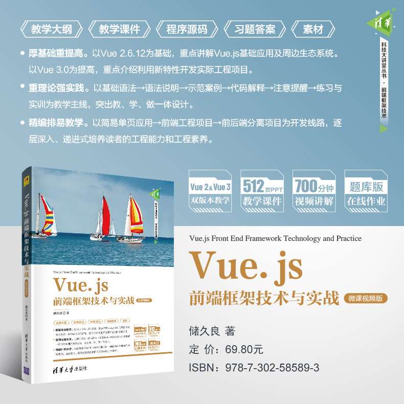

Vue.js是一套用于构建用户界面的渐进式框架，是目前流行的三大前端框架之 一。本书以Vue 2.6.12为基础，重点讲解Vue生产环境配置与开发工具的使用、基 础语法、指令、组件开发及周边生态系统；以Vue 3.0为提高，重点介绍新版本改 进和优化之处以及如何利用新版本开发应用程序。
全书共分为12章，主要涵盖Vue.js概述、Vue.js基础、Vue.js指令、Vue.js基 础项目实战、Vue.js组件开发、Vue.js过渡与动画、Vue项目开发环境与辅助工具 部署、前端路由Vue Router、状态管理模式Vuex、Vue UI组件库、Vue高级项目 实战以及Vue 3.0基础应用。每章均附有本章学习目标、本章小结、练习与实训， 便于广大读者和工程技术人员学习、实践与提高。